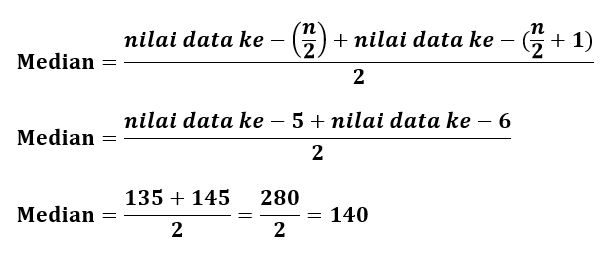

Median merupakan salah satu ukuran pemusatan data. Apabila data yang sudah terkumpul diurutkan, maka nilai data yang terletak di tengah (nilai tengah data) disebut median.
Setelah menekan tombol "lihat contoh", scroll ke bawah untuk mencoba contoh

Coba amati data berat badan 9 siswa laki-laki kelas VIII D SMP Ceria berikut ini (dalam kg)
47 57 53 50 45 48 52 49 55
Untuk menemukan median, data harus diurutkan terlebih dahulu. Urutkan data diatas dengan mengisi titik-titik dibawah ini
Setelah data diurutkan, pilihlah salah satu angka dibawah untuk menentukan angka mana yang terdapat pada posisi/urutan paling tengah
Tentukan median pada skor 10 anak yang mengikuti babak semifinal lomba menyanyi berikut.
| Perolehan Skor Menyanyi | ||||
|---|---|---|---|---|
| 120 | 135 | 160 | 125 | 90 |
| 205 | 160 | 175 | 105 | 145 |
Untuk menyelesaikan, kita harus mengurutkan terlebih dahulu data pada tabel. Urutkanlah data pada tabel dengan mengisi titik-titik dibawah ini.
Karena banyak data (n) genap yaitu 10, maka mediannya adalah rata-rata data ke-5 dan ke-6, yaitu :
Jadi, median dari skor lomba menyanyi adalah 140